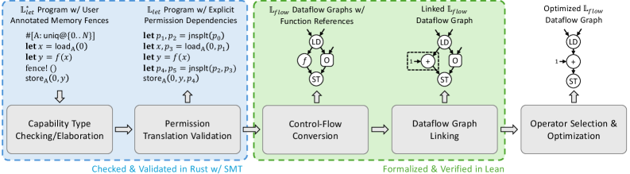
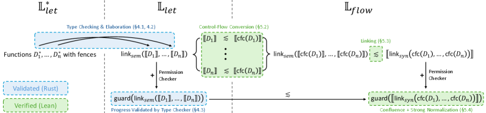
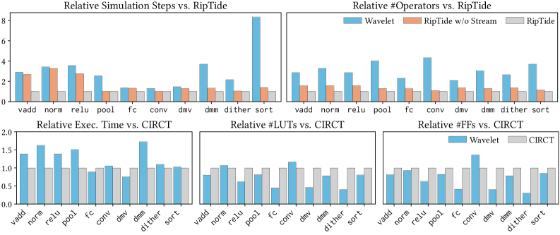

Two core compiler passes (control flow conversion and linking) for asynchronous dataflow are formalized in Lean with forward simulation and determinacy proofs.
Abstract
Dataflow architectures have gained renewed interest due to their balance between power efficiency and performance. In (spatial) dataflow architectures, a program is represented as a set of entirely distributed and dynamically scheduled dataflow operators that communicate through asynchronous channels, which greatly improves data locality and parallelism. However, compiling to dataflow architectures remains an error-prone process, in order to maintain determinacy while enabling pipelining. Determinacy means that the result of a dataflow program is deterministic and independent of the schedule of operator execution, and pipelining is an important optimization in spatial dataflow that enables parallelism across loop iterations. In this work, we present Wavelet, the first effort to formally verify a compiler for asynchronous dataflow. We use a mix of techniques to achieve this goal. Our frontend uses a novel capability type system with fences to synchronize conflicting memory accesses and enable pipelining. We then verify a Lean formalization of two core passes of our compiler that translates elaborated programs from the type checker to dataflow graphs, proving important properties of forward simulation and determinacy. Notably, our formalization semantically propagates the soundness guarantees of the frontend type system, ensuring modularity between simulation and determinacy proofs. In evaluation, we show that dataflow graphs compiled by Wavelet have comparable sizes to those produced by an unverified optimizing compiler for the RipTide spatial dataflow architecture.
Problem
Compiling sequential programs to asynchronous spatial dataflow architectures is error-prone: it must maintain determinacy (schedule-independent results) while enabling pipelining. Existing dataflow compilers are unverified or rely only on translation validation.
Approach
Wavelet uses a capability type system with fences to synchronize conflicting memory accesses and enable pipelining, elaborated into explicit permission tokens. The core control flow conversion and linking passes, translating elaborated programs to dataflow graphs, are formally verified in Lean. The proofs establish forward simulation and determinacy, semantically propagating frontend type-system soundness to keep simulation and determinacy proofs modular.

Figure 2. Compiler pipeline of Wavelet. The compilation transforms the frontend language \mathbb{L}^{*}_{\mathit{let}} through the elaborated IR \mathbb{L}_{\mathit{let}} to the dataflow calculus \mathbb{L}_{\mathit{flow}} .

Figure 3. Proof structure overview of Wavelet. \lesssim denotes simulation; \mathsf{cfc} is control flow conversion ( Section ˜ 5.2 ); \mathsf{link}_{\mathit{sem}} is the semantic linking of LTSs ( Section ˜ 5.3 ); \mathsf{link}_{\mathit{syn}} is the syntactic linking of dataflow graphs ( Section ˜ 5.3 ); \mathsf{guard} imposes permission checking on the base semantics ( Section ˜ 5.4 ).
Results
Wavelet's compiled dataflow graphs are 2.62x slower and 3.04x larger (geometric mean) than the unverified RipTide compiler, narrowing to 1.69x slower and 2.26x larger when RipTide's streamification is disabled. Graphs are comparable in size to unverified optimizing compilers.

Figure 11. Compilation quality: the first row compares simulation performance and graph size of Wavelet and RipTide; the second row compares execution time and resource usage of Wavelet and CIRCT in dynamic HLS.